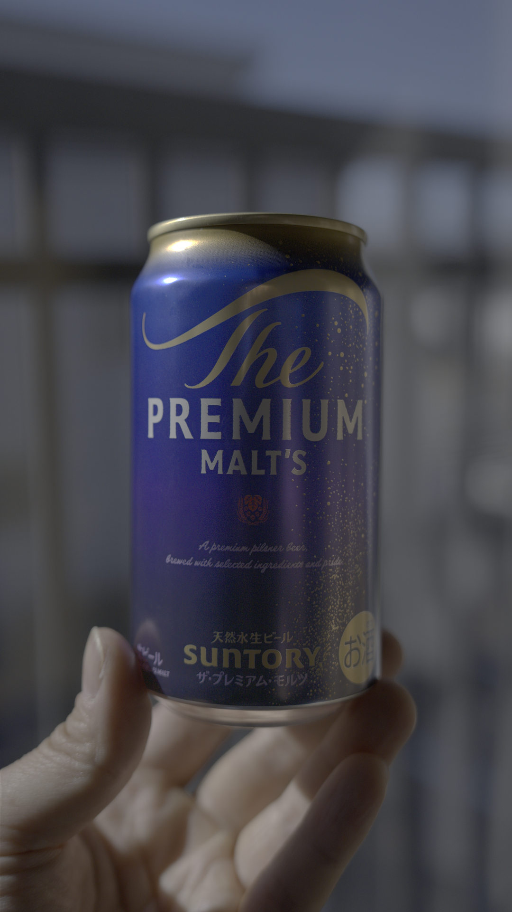

13ステップでできる HDR写真現像
YouTube Shorts「13ステップでできる HDR写真現像」で現像した静止画を掲載しています。
現像・書き出し結果

- 画像サイズ
- 1080 × 1920 px
- フォーマット
- PNG / RGB 各16 bit
- カラープロファイル
- ICCプロファイル埋め込み
- ファイルサイズ
- 約11.3 MiB
公開用のPNGファイルを直接表示しています。

HDRの表示は、OS・ブラウザ・ディスプレイとHDR設定に依存します。画像が表示されていても、HDRとして出力されているとは限りません。